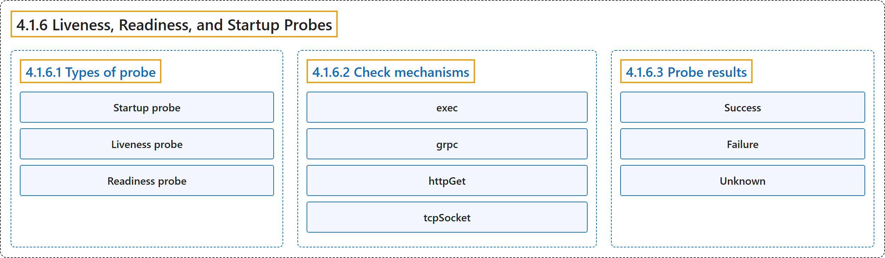

4.1.6 Liveness, Readiness, and Startup Probes
Classification

Glossary
| Term | Definition | 中文翻译 | Source |
|---|---|---|---|
| 4.1.6 Liveness, Readiness, and Startup Probes 存活、就绪和启动探针 |
"Kubernetes lets you define probes to continuously monitor the health of containers in a Pod." | Kubernetes 让你定义探针，持续监控 Pod 中容器的健康状况。 | The Kubernetes Authors, n.d., "Liveness, Readiness, and Startup Probes", para. 1 |
| 4.1.6.1 Types of probe 探针类型 |
"The kubelet can optionally perform and react to three kinds of probes on running containers, each serving a different purpose:" | kubelet 可以选择执行针对运行中容器的三种探针并做出响应，每种用途不同： | The Kubernetes Authors, n.d., "Types of probe", para. 1 |
| Startup probe 启动探针 |
"Startup probes verify whether the application within a container is started." | 启动探针验证容器内的应用是否已启动。 | The Kubernetes Authors, n.d., "Startup probe", para. 1 |
| Liveness probe 存活探针 |
"Liveness probes determine when to restart a container." | 存活探针决定何时重启容器。 | The Kubernetes Authors, n.d., "Liveness probe", para. 1 |
| Readiness probe 就绪探针 |
"Readiness probes determine when a container is ready to accept traffic." | 就绪探针决定容器何时准备好接收流量。 | The Kubernetes Authors, n.d., "Readiness probe", para. 1 |
| 4.1.6.2 Check mechanisms 检查机制 |
"There are four different ways to check a container using a probe." | 有四种不同的方式可以用探针检查容器。 | The Kubernetes Authors, n.d., "Check mechanisms", para. 1 |
| exec exec |
"Executes a specified command inside the container." | 执行指定的命令，在容器内部进行。 | The Kubernetes Authors, n.d., "Check mechanisms", para. 3 |
| grpc grpc |
"Performs a remote procedure call using gRPC." | 执行远程过程调用，使用 gRPC。 | The Kubernetes Authors, n.d., "Check mechanisms", para. 5 |
| httpGet httpGet |
"Performs an HTTP GET request against the Pod's IP address on a specified port and path." |
执行 HTTP GET 请求，目标是 Pod 的 IP 地址上指定的端口和路径。 |
The Kubernetes Authors, n.d., "Check mechanisms", para. 7 |
| tcpSocket tcpSocket |
"Performs a TCP check against the Pod's IP address on a specified port." | 执行 TCP 检查，目标是 Pod 的 IP 地址上指定的端口。 | The Kubernetes Authors, n.d., "Check mechanisms", para. 9 |
| 4.1.6.3 Probe results 探针结果 |
"The kubelet evaluates the result of each probe execution and takes action accordingly." | kubelet 评估每次探针执行的结果，并据此采取行动。 | The Kubernetes Authors, n.d., "Probe results", para. 1 |
| Success Success |
"The container passed the diagnostic." | 容器通过了诊断。 | The Kubernetes Authors, n.d., "Probe results", para. 3 |
| Failure Failure |
"The container failed the diagnostic." | 容器未通过诊断。 | The Kubernetes Authors, n.d., "Probe results", para. 5 |
| Unknown Unknown |
"The diagnostic failed (no action should be taken, and the kubelet will make further checks)." | 诊断本身失败（不应采取任何行动，kubelet 会进一步检查）。 | The Kubernetes Authors, n.d., "Probe results", para. 7 |
References
The Kubernetes Authors. (n.d.). Liveness, Readiness, and Startup Probes. Kubernetes Documentation. Retrieved October 31, 2026, from https://kubernetes.io/docs/concepts/workloads/pods/probes/